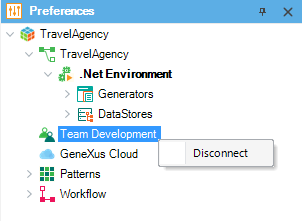
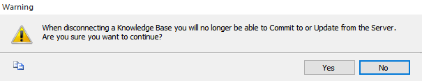

The Disconnect From Server option allows dissociating a local Knowledge Base from a GeneXus Server one. Step by step1) Refer to the Preferences menu and right-click upon the Team Development node:  2) The confirmation dialog will appear:  3) Done! The local Knowledge Base now disconnected from the GeneXus Server one. Note: After confirmation, the Send Knowledge Base to GeneXus Server option will be available under the File menu. |